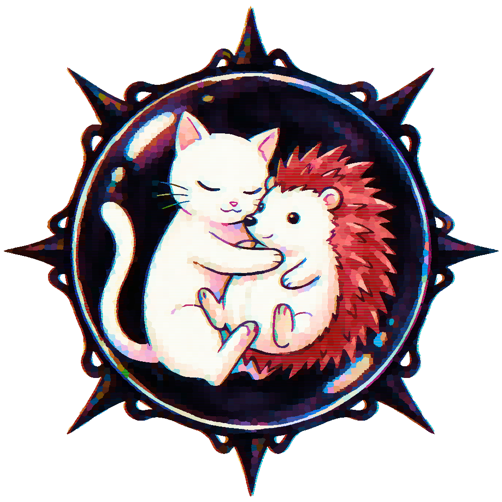

Personal
Personal
個人
- Nací el 1 de diciembre de 1996 y soy 0 positivo (lo anoto porque siempre me olvido).
- Nunca he fumado ni bebido alcohol; además, si fuera a ser mi pareja, rechazo a quienes consumen.
- Como nadie me suele apoyar, me tomo mi tiempo en todo.
- Tengo un sueño que nunca pude cumplir.
- No suelo contestar a nada a menos que pregunten algo importante o me digan de primeras el motivo por el que me hablan.
- Soy asocial, no suelo iniciar conversación.
- No me gusta viajar, ni el pescado en general, ni su olor.
- No me suelen gustar las canciones que mezclan idiomas.
- Me gustan los videojuegos, aunque cada vez los consumo menos; soy poco competitivo, tanto que no he participado en torneos.
- No colecciono nada, ni suelo gastar el dinero (porque soy pobre).
- Me cansa y soy perezoso para hablar verbalmente.
- Soy esclavo de los gatos.
- El único programa de edición de imágenes que me gusta es el Gimp.
- Evito los juegos o libros sin demo por dudar del contenido.
- I was born on December 1st, 1996, and my blood type is O positive (I write it down because I always forget).
- I have never smoked or drunk alcohol; and if someone were to be my partner, I would turn down those who do.
- Since almost no one tends to support me, I take my time with everything.
- I have a dream I was never able to fulfill.
- I rarely reply to anything unless someone asks something important or tells me upfront why they are reaching out.
- I am asocial and rarely initiate conversation.
- I dislike travelling, fish in general, and its smell.
- I generally dislike songs that mix languages.
- I enjoy video games, though I play them less and less; I am not very competitive — I have never taken part in tournaments.
- I do not collect anything, nor do I tend to spend money (because I am poor).
- Talking verbally tires me out and I am lazy about it.
- I am a slave to cats.
- The only image editing program I like is Gimp.
- I avoid games or books without a demo because I doubt the content.
- 1996年12月1日生まれで、血液型はO型陽性です （いつも忘れるので書き留めています）。
- タバコも飲酒もしたことがありません。もしパートナーになるなら、それらを嗜む人はお断りします。
- 応援してくれる人がほとんどいないので、何事もマイペースに取り組んでいます。
- 叶えられなかった夢があります。
- 重要な質問か、最初から話しかける理由を伝えてもらわない限り、基本的に返信しません。
- 非社交的で、自分から会話を始めることはほとんどありません。
- 旅行も、魚全般も、その匂いも好きではありません。
- 複数の言語が混ざった曲はあまり好きではありません。
- ゲームは好きですが、最近はあまりプレイしなくなりました。競争心が薄く、大会に参加したことはありません。
- 何も集めておらず、お金もあまり使いません （貧しいので）。
- 口頭で話すのは疲れるし、面倒に感じます。
- 猫の奴隷です。
- 好きな画像編集ソフトはGimpだけです。
- 内容に疑問を感じるので、体験版のないゲームや本は避けています。
↓ Cosas sobre la novela ↓
↓ About the novel ↓
↓ 小説について ↓
- Empecé la novela en octubre de 2018 y la publiqué como una trilogía el último día de 2023.
- Desde 2021 que la publiqué en Amazon, hasta inicios de 2026, la novela generó en 5 años 15€.
- La historia, la escritura (en español) y los diseños de los personajes no son IA.
- Incluso si la novela ganara algún premio, nunca lo presumiría en su sinopsis o portada. Ni siquiera tengo intención de participar en algún torneo porque los gustos son subjetivos.
- No tengo planeado adaptar la historia a otro medio; aunque sí pensé en una novela visual, lo cancelé por todo el trabajo que conlleva hacerlo solo. Si lo adaptase a otro medio, sería una vez que haya finalizado la historia al 100%.
- No admiro a los ilustradores que dibujan por tendencia para ganar popularidad y, sin permiso, los venden como si fueran de su propiedad (aunque yo lo permito). O quienes aprovechan la muerte de un autor popular con la excusa de conmemorarlo.
- Atesoro lo que me regalan, como dibujos antiguos (o actuales, incluso si son hechos con IA) que a día de hoy conservo.
- Si siento necesario hacer cambios a la historia, no dudaré en actualizarlo.
- I started the novel in October 2018 and published it as a trilogy on the last day of 2023.
- From 2021, when I published it on Amazon, until early 2026, the novel earned €15 over 5 years.
- The story, the writing (in Spanish) and the character designs are not AI-generated.
- Even if the novel were to win some award, I would never boast about it in its synopsis or cover. I do not even intend to enter any competition, because taste is subjective.
- I have no plans to adapt the story to another medium; although I did consider a visual novel, I cancelled it due to all the work it would involve doing alone. If I were to adapt it to another medium, it would be once the story is 100% finished.
- I do not admire illustrators who draw trending content just to gain popularity and then sell it as if it were their own property without permission (even though I allow it). Or those who exploit the death of a popular author under the guise of commemorating them.
- I treasure gifts I receive, such as old drawings (or recent ones, even if made with AI) that I still keep to this day.
- If I feel changes to the story are necessary, I will not hesitate to update it.
- 2018年10月に小説を書き始め、2023年の最終日に三部作として出版しました。
- 2021年にAmazonで出版してから2026年初頭までの5年間で、小説の収益は15ユーロでした。
- ストーリー、文章（スペイン語）、キャラデザインはAI生成ではありません。
- たとえ小説が何らかの賞を受賞しても、あらすじや表紙に載せて自慢するつもりはありません。趣味は主観的なものなので、コンテストに参加するつもりもありません。
- ストーリーを別のメディアに展開する予定はありません。ビジュアルノベルも考えましたが、一人でこなす作業量を考えて断念しました。もし別の媒体に適応させるとしたら、それはストーリーが 100% 完成してからになるでしょう。
- 人気を得るためにトレンドに乗ったイラストを描き、許可なく自分の「所有物」として販売するイラストレーターは尊敬しません（私自身は許可していますが）。また、人気作家の死を追悼という名目で利用する人も同様です。
- 頂いたものはすべて大切にしています。古い絵（または最近のもの、AIで描かれたものでも）を今でも保管しています。
- ストーリーに変更が必要だと感じたら、迷わず更新します。